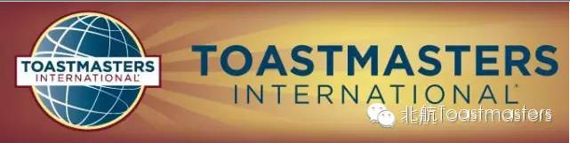
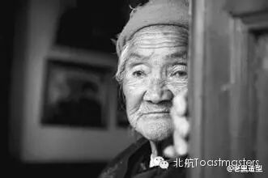
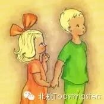
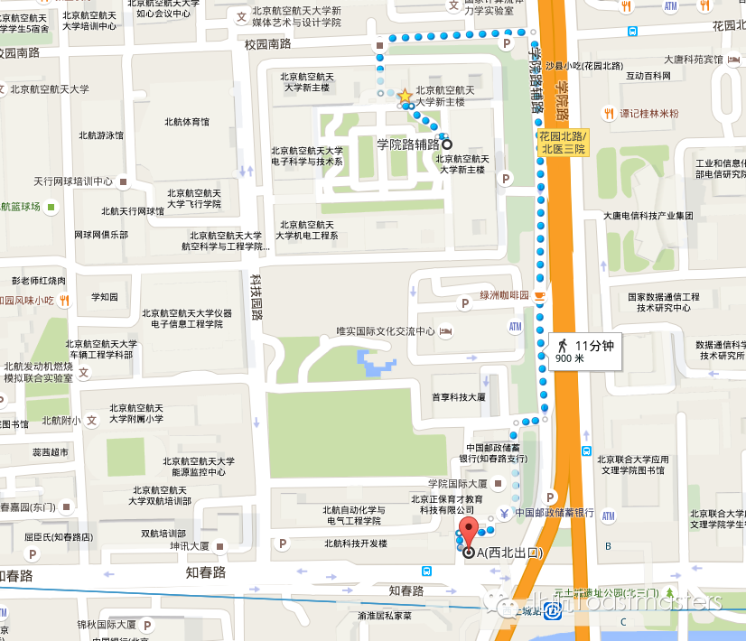

Leaving Home
TM John
TTM Kiki
We all have experienced the happy new year.We still remember the first day we went back home, our mother and father talkedwith us excitedly, which showed the deep love they have for us! We stillremember the familiar streets, familiar shops, and of course, familiar people.There is always not enough time to enjoy these wonderful things. Now we shouldgo back to our own position. We should go to school, we should go to the workand so on. When you leave your home, what impresses you deeply. What do youfeel most regretful for? Come to join us at 7:30pm in Beihang Toastermasters tolisten to us when we leave home!

Andy
Big Brother And Little Sister
CC3
We play different roles in our life everyday. We are the child of our parents, we are the friends of our friends, we arestudents…… What’s the feeling of being big brothers and little sisters? How doyou look at the relationship between big brothers and little sisters?Now let’sAndy share his opinions with us.

Vance
My Cycling Experience In Hainan Province
CC5
Vance! A cool boy! In this winter, he wentto Hainan with his friends and cycled around Hainan! A really exciting story,isn’t it? What a fantastic trip and what a passionate guy! It must be very interestingin his trip.So let’s listen to his story!
What are Toastmasters?
Toastmasters International (TI)is a nonprofit educational organization that operates clubs worldwide for thepurpose of helping members improve their communication, public speaking, andleadership skills.
